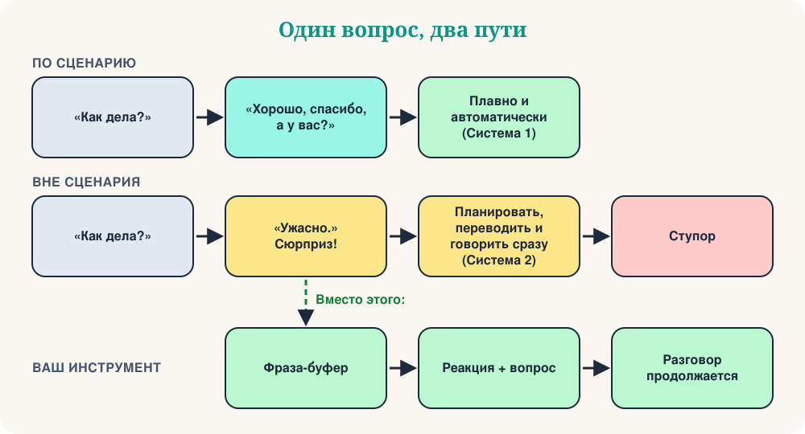

В моём разговорном клубе Mind Matters мы изучаем психологию изучения языков. Недавно мы начали с короткого видео, которое нас рассмешило, а потом заставило задуматься. Оно называется «Когда пациент выходит из сценария». Сотрудник говорит обычное приветствие: «Как дела?» Пациент спокойно отвечает: «Ужасно». И сотрудник «зависает»: заикается, путает слова, нервно смотрит по сторонам.
Если вы учите язык, вы знаете этот момент. Вам задают привычный вопрос, вы даёте привычный ответ, и вдруг собеседник говорит то, к чему вы не готовились. В голове пусто. Это реальное явление? У психологии есть полезное объяснение: теория сценариев.
Часть 1: Что такое сценарий?
В 1970-х годах когнитивисты Роджер Шэнк и Роберт Абельсон предположили, что знания о повседневных ситуациях мы храним в виде сценариев: типичных последовательностей событий, ролей и ожиданий. Их классический пример — поход в ресторан:
- Вы входите и ждёте, пока вас посадят.
- Вы читаете меню и делаете заказ.
- Вы едите.
- Вы просите счёт и платите.
- Вы уходите.
Этот список никто не преподаёт, и никто его не забывает. Вы не закажете десерт раньше основного блюда и не будете гадать, кто платит. Сценарии экономят умственную энергию: последовательность предсказуема, и можно действовать почти на автопилоте.
Здесь помогает популярное различие Даниэля Канемана (это упрощение, но полезное). Сценарное поведение в основном быстрое и автоматическое — Система 1. Новые ситуации требуют медленной, осознанной Системы 2. На иностранном языке Система 2 и так напряжённо ищет слова. Поэтому заученные фразы дают чувство опоры: «Как дела?» — «Хорошо, спасибо, а у вас?» почти ничего не стоит.
Часть 2: Что происходит, когда сценарий ломается?

Разговор — совместная деятельность. Психологи Мартин Пикеринг и Саймон Гаррод описывают диалог как интерактивное выравнивание: пока мы говорим, мы бессознательно подстраиваемся друг под друга — в словах, конструкциях и в том, как понимаем смысл. Сценарий облегчает это, потому что оба знают, что будет дальше.
Когда собеседник говорит «Ужасно», прогноз не сбывается. Теперь нужно сразу понять неожиданное сообщение, решить, как реагировать, найти слова и произнести их — на языке, который ещё не стал автоматическим. Добавьте давление чужого внимания, и рабочая память перегружена. Ступор, заикание и «короткое замыкание робота» — это просто вид перегрузки со стороны.
Стоит запомнить два момента. Первый: ступор — не доказательство, что вы плохо знаете язык. Носители тоже замирают, когда разговор уходит в неожиданную сторону; у них просто больше автоматического материала. Второй: проблема часто во времени. Многие слова вы знаете. Вам не хватает секунд.
Часть 3: Вне сценария начинается обучение
Раньше я испытывал тот же страх. Как преподаватель и как ученик я любил хорошо подготовленные диалоги. После многих лет работы с изучающими английский, французский, итальянский, русский, греческий и другие языки я изменил мнение. Заученный диалог — это репетиция. Неожиданный обмен репликами — это настоящее общение.
Социолог Эрвинг Гофман показал, что повседневное взаимодействие — не просто следование тексту. Люди постоянно управляют ситуацией: интерпретируют действия другого, подстраиваются, исправляют мелкие неловкости и помогают друг другу «сохранить лицо». Импровизация — нормальный человеческий навык, а не признак неудачи. Сбиваясь со сценария, вы тренируете именно этот навык на новом языке.
Ваш набор инструментов
Совет 1: Выигрывайте время с помощью фраз-буферов
Когда приходит неожиданный вопрос, не отвечайте сразу. Сначала скажите короткую автоматическую фразу. Она даёт мозгу две-три секунды и звучит естественно: носители используют такие фразы постоянно.
| Язык | Начните с… | Затем добавьте… |
|---|---|---|
| Английский | That's a good question… | Let me think for a second… |
| Французский | C'est une bonne question… | Voyons voir… laissez-moi réfléchir. |
| Итальянский | Bella domanda… | Allora… vediamo… dammi un attimo. |
| Испанский | Buena pregunta… | A ver… déjame pensar. |
| Русский | Хороший вопрос… | Так… дайте подумать. |
| Греческий | Καλή ερώτηση… | Για να δω… να το σκεφτώ λίγο. |
Выберите одну фразу для каждого языка и сделайте её «по умолчанию». Повторите вслух десять раз, пока она не станет автоматической.
Совет 2: Стремитесь к общению, а не к идеалу
Тревога из-за сценария часто идёт от перфекционизма — скрытой уверенности, что каждая фраза должна звучать как в учебнике. Когда собеседник выходит из сценария, внутренний перфекционист паникует, потому что заученный диалог разрушен. Поменяйте цель. Язык — не сцена, а связь. Используйте простые слова, жесты или перифразу: объяснение незнакомого слова через описание. Цель — понять друг друга, а не получить приз за грамматику.
Совет 3: Стройте гибкие сценарии, а не жёсткие
Если вы выучите диалог наизусть, он рухнет, как только собеседник отклонится от него. Учите «кубики». Очень полезный кубик — лестница из трёх шагов: отреагируйте, спросите, предложите. Она работает почти при любой неожиданности.
| Язык | 1. Отреагируйте | 2. Спросите | 3. Предложите |
|---|---|---|---|
| Английский | Oh no… | What happened? | Do you want to talk about it? |
| Французский | Oh non… | Qu'est-ce qui s'est passé ? | Vous voulez en parler ? |
| Итальянский | Oh no… | Che cosa è successo? | Vuoi parlarne? |
| Испанский | Vaya… | ¿Qué ha pasado? | ¿Quieres hablar de ello? |
| Русский | Ой, нет… | Что случилось? | Хотите поговорить об этом? |
| Греческий | Ωχ, όχι… | Τι συνέβη; | Θέλετε να το συζητήσουμε; |
Та же идея работает в бытовых ситуациях. Вместо одного диалога о покупке кофе учите фразы с «окном», которое можно менять:
Меняйте пропуск: латте, чай, сэндвич.
Context: Заказ
Ваш манёвр на любую неожиданность. Разговор становится веткой, а не стеной.
Context: Когда ответ «нет»
Совет 4: Переосмыслите «ошибку»
Когда вы запнулись, мозг воспринимает это как угрозу. Попробуйте переосмыслить всплеск адреналина. Вместо «я ошибся, я выгляжу глупо» скажите себе фразу ниже. Лингвист Стивен Крашен называл тревогу «аффективным фильтром», который блокирует обучение. Эта гипотеза обсуждается, но большинство преподавателей узнают эффект: расслабленные ученики говорят больше, а больше говорить — значит лучше учиться.
Скажите про себя, потом используйте фразу-буфер.
Context: Внутренний голос
Быстрый тест
❓ Пациент говорит «Ужасно». Вы замираете. Почему, согласно теории сценариев?
Сценарий предсказывает, что будет дальше. Когда прогноз не сбывается, нужно перейти от автоматической обработки к усилию, и это перегружает.
❓ Какой лучший первый шаг после неожиданного вопроса?
Фраза-буфер автоматическая, поэтому ничего не стоит, и она даёт мозгу нужные секунды.
❓ Какая стратегия делает вас гибче в разговоре?
Кубики можно пересобирать. Жёсткий диалог работает, только если собеседник ему следует.
Ваша тренировка на 10 минут
- Выберите фразу-буфер из таблицы и скажите её вслух десять раз.
- Задайте другу (или диктофону) пять привычных вопросов: «Как дела?», «Что ты сегодня делал?»…
- Друг отвечает на каждый неожиданно: «Ужасно», «Я потерял ключи», «Я переезжаю в Норвегию».
- Вы отвечаете по схеме: фраза-буфер, реакция, вопрос.
- Поменяйтесь ролями. Потом запишите второй раунд и услышьте разницу.
Заключение
В следующий раз, когда вы замрёте, не считайте это провалом. Это приглашение выйти из автоматического шаблона и встретиться с живым человеком напротив. Скажите фразу-буфер, отреагируйте, спросите и не дайте разговору угаснуть.
“Момент, когда сценарий заканчивается, — это момент, когда начинается разговор.”
Источники и дополнительное чтение
- Schank, R. & Abelson, R. (1977). Scripts, Plans, Goals and Understanding.
- Pickering, M. & Garrod, S. (2004). Toward a mechanistic psychology of dialogue. Behavioral and Brain Sciences, 27.
- Goffman, E. (1959). The Presentation of Self in Everyday Life.
- Kahneman, D. (2011). Thinking, Fast and Slow.
- Krashen, S. (1982). Principles and Practice in Second Language Acquisition.